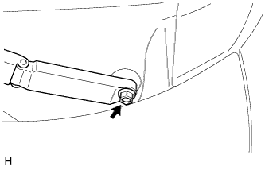

FRONT WIPER MOTOR > REMOVAL |
| 1. DISCONNECT CABLE FROM NEGATIVE BATTERY TERMINAL |
| Condition | Waiting Time |
| Vehicle enrolled in G-BOOK system | 6 minutes |
| Vehicle not enrolled in G-BOOK system | 1 minute |
| 2. REMOVE UPPER RADIATOR SUPPORT SEAL |
 |
Remove the 13 clips and upper radiator support seal.
| 3. REMOVE ENGINE ROOM SIDE COVER LH |
 |
Detach the 4 clips and remove the engine room side cover.
| 4. REMOVE ENGINE ROOM COVER SIDE |
 |
Detach the 4 clips and remove the engine room side cover.
| 5. REMOVE FRONT FENDER SIDE PANEL PROTECTOR LH |
 |
Detach the 3 clips and guide, and remove the front fender side panel protector.
| 6. REMOVE FRONT FENDER SIDE PANEL PROTECTOR RH |
| 7. REMOVE FRONT FENDER TO COWL SIDE SEAL LH |
 |
Detach the 5 claws and remove the front fender to cowl side seal LH.
| 8. REMOVE FRONT FENDER TO COWL SIDE SEAL RH |
| 9. REMOVE FRONT WIPER ARM HEAD CAP |
 |
Using a screwdriver, detach the 3 claws and remove the wiper arm head cap.
| *1 | Protective Tape |
| 10. REMOVE FRONT WIPER ARM AND BLADE ASSEMBLY LH |
|  |
Remove the nut and front wiper arm and blade assembly LH.
| 11. REMOVE FRONT WIPER ARM AND BLADE ASSEMBLY RH |
 |
Remove the nut and front wiper arm and blade assembly RH.
| 12. REMOVE HOOD TO COWL TOP SEAL |
 |
Detach the 7 claws and 2 clips and remove the hood to cowl top seal.
| 13. REMOVE CENTER NO. 2 COWL TOP VENTILATOR LOUVER |
Detach the 2 claws and 3 guides and remove the center No. 2 cowl top ventilator louver.
| 14. REMOVE COWL TOP VENTILATOR LOUVER SUB-ASSEMBLY |
 |
Remove the 2 clips.
Detach the 6 claws and guide (A).
Disengage the 10 guides (B) and pull out the cowl top ventilator louver sub-assembly.
| *1 | Guide A |
| *2 | Guide B |
| 15. REMOVE WINDSHIELD WIPER MOTOR AND LINK |
Detach the clamp and disconnect the connector.
Remove the 2 bolts.
Detach the grommet and remove the windshield wiper motor and link as shown in the illustration.
| *1 | Grommet |
| 16. REMOVE WINDSHIELD WIPER MOTOR ASSEMBLY |
 |
Using a screwdriver, separate the windshield wiper link rod from the crank arm pivot of the front wiper crank as shown in the illustration.
| *1 | Protective Tape |
 |
Disconnect the connector.
Using a T30 ''TORX'' socket, remove the 2 bolts and windshield wiper motor.
| 17. REMOVE WIPER MOTOR WIRE |
 |
Detach the claw and remove the wiper motor wire.